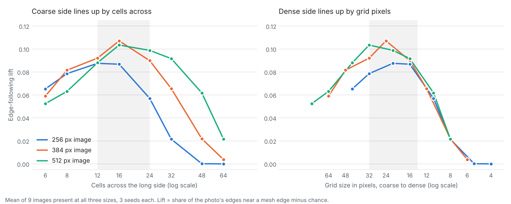
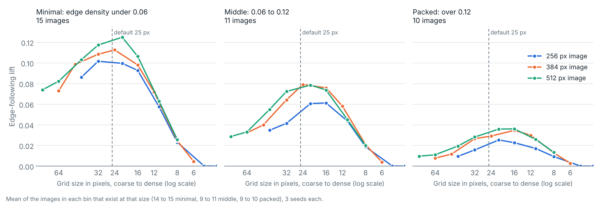
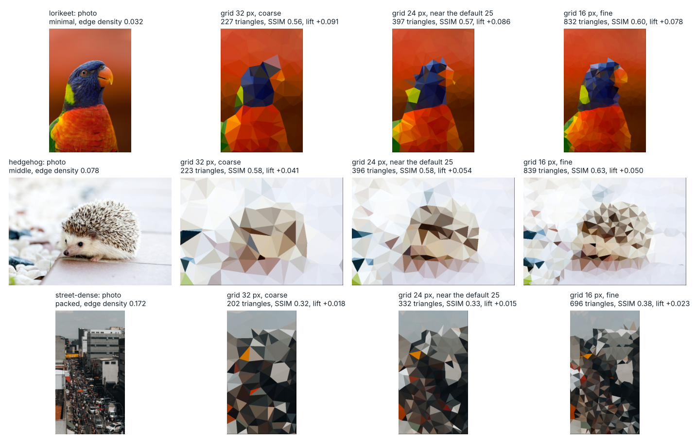

01Context
low-poly-generator turns a photo into a geometric triangle mesh. Many
outputs are acceptable and none is the single correct one, so a test cannot compare against an
expected image. This is the test oracle problem (Weyuker, 1982; Barr et al.,
2015).
Prior art: golden-image tests (Chromium, Flutter), metamorphic testing (Chen et al., 2018), fault injection (Jia and Harman, 2011).
Detection
Which automated checks catch a broken render while ignoring normal run-to-run noise?
Calibration
Which default settings follow the photo best? A by-product that tunes the defaults (Appendix A).
02Outcome
What held
Comparing each output with its own stored result catches faults. A single pass mark does not.
03Key stages
Two standard image-comparison scores are used throughout, and higher is better for both: structural similarity (SSIM, 0 to 1: how closely shapes and textures match the original) and signal fidelity (PSNR, in decibels, dB: how small the pixel-level error is).
-
Noise floor and known faults
Re-running the same photo with 20 different random seeds gives slightly different scores. Typical variation (standard deviation): 0.002–0.006 for structural similarity, 0.1–0.3 dB for signal fidelity. Large faults move both scores; small ones show up only in signal fidelity.
-
Relative, not absolute
A coarser mesh scores lower by design, so each photo and setting is checked against its own stored reference instead of a pass mark.
-
Baseline
Stored scores carry a tight tolerance in both directions (0.005 similarity, 0.1 dB fidelity), changed only by review. It caught every injected fault and tested size, with a margin of 7× (similarity) and 5× (fidelity) over the measured platform spread. Fixed-seed runs repeat exactly on one machine, so seed noise does not trigger false alarms.
-
Fault injection
Of 21 injected changes, the baseline caught all 9 faults and tested sizes and flagged one of two harmless changes. The other tests, without the differential test, caught 3 of 9.
-
Metamorphic prototype
Metamorphic checks change an input in a predictable way (for example, colour options should not move mesh points). The prototype caught 6 of 12 faults, all also caught by the baseline: it helps diagnose faults but detects no more.
04Final design
Test
- Stored-score baseline, failing on drops and rises (built; blocks CI)
- Platform differences: at most 0.0007 similarity and 0.02 dB across 7 build environments; CI uploads scores on each run
- Colour options leave mesh points unchanged
- Zero vertex jitter stops triangle corners snapping to edges
- Scoring metrics detect known damage
- A photo's own output outscores another photo's by at least 0.10
- The saturation option changes the colours
Do not test
- A fixed similarity or fidelity pass mark
- That a given grid or setting is “best”
- More triangles scoring higher between close grid sizes
- Single-seed or unequal-density comparisons
- Quality scores on randomly generated images
- A baseline that ignores score rises
- A baseline as a replacement for exact tests
05Impact
Guarding CI
Builds fail when quality scores shift beyond the tolerance.
Signal vs noise
A measured noise floor separates real regressions from normal variation.
Defaults checked
Edge detection and smoothing defaults confirmed; a vertex jitter that scales with grid size is suggested (Appendix A).
06Learnings & status
- Measure noise before setting a tolerance.
- Start from a golden baseline (stored known-good scores) and validate it by injecting faults, ideally first.
- A rise in a score can be a fault too.
- Calibration is tuning, not testing: keep it apart from regression checks.
Current status. The baseline is live and blocks CI. Most other checks remain proposed, not built. No human preference comparison was conducted, so the study makes no claim about visual appeal.
AAppendix: tuning the defaults
The study measured how closely the mesh follows the photo as each setting changes. The headline measure, edge alignment, shows how well triangle corners trace the photo's real outlines (a jawline, a roofline, a horizon): low alignment looks muddy, high alignment keeps the subject crisp with fewer polygons. It peaks where similarity and fidelity keep rising, so it can choose a density. Differences below about 0.01 similarity or 0.02 alignment are noise. Changing a default moves the baseline's stored scores, so it is a reviewed change.
| Setting | Current default | Key finding | Recommendation |
|---|---|---|---|
| Grid spacing | 25 px | Alignment peaks near 16 cells across. 25 px is in the best band for 384 and 512 px images, but about 17% below the peak for packed scenes at 384 px. | Keep; about 20 px at 256 px; 16–21 px for packed scenes |
| Vertex jitter | 12 | Scaling jitter with grid size (the larger of 12 or half the grid) is better at every grid tested, equal up to 25 px. | Suggested, not adopted |
| Edge detection | Standard (100/200) | Highest alignment at 256, 384 and 512 px. | Keep |
| Smoothing | 75 | Improves similarity by 0.013 to 0.021; doubling to 150 adds at most 0.002. | Keep |
| Colour saturation | 1.3 | Costs 0.014 to 0.017 similarity against 1.0, for more vivid colour. | Style choice |
| Colour assignment | Centroid | Mean colour scores 0.8 to 1.8 dB higher on fidelity. | Offer as an option |
Config names: grid_size, jitter, Canny, saturation,
color_mode.
Busier images want a finer grid. 36 photos grouped by edge density (the share of pixels on a detected edge):



BAppendix: the journey
- Replace judging outputs by eye with measurements.
- Choose measures, find the noise floor, define known faults.
- Sweep grid size and five other settings: 4 photos, then 14 images, then 36 grouped by edge density.
- Draft seven proposed tests; critique them against related work.
- Build the baseline and validate it by fault injection.
Shortest route next time: measure the noise floor, build a golden baseline, inject faults, add metamorphic tests for diagnosis, track platform spread in CI.
RReferences
- Barr et al. (2015). The oracle problem in software testing: a survey. IEEE TSE 41(5).
- Chen et al. (2018). Metamorphic testing: a review of challenges and opportunities. ACM CSUR 51(1).
- Chromium. GPU pixel testing with Gold.
- Flutter. Writing a golden file test.
- Jia and Harman (2011). An analysis and survey of the development of mutation testing. IEEE TSE 37(5).
- Just et al. (2014). Are mutants a valid substitute for real faults? FSE.
- Segura et al. (2016). A survey on metamorphic testing. IEEE TSE 42(9).
- Wang et al. (2004). Image quality assessment: from error visibility to structural similarity. IEEE TIP 13(4).
- Weyuker (1982). On testing non-testable programs. The Computer Journal 25(4). doi
The report lists all references, including metamorphic testing of imaging software, boundary recall and learned image metrics.